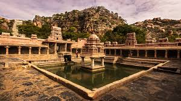

Yaganti Temple
Yaganti Temple, dedicated to Lord Shiva, is a famous pilgrimage site located in the Kurnool district. The temple is renowned for its architecture and the unique idol of the deity. It is surrounded by scenic hills, adding to its spiritual ambiance.
Location: Yaganti, Kurnool, Andhra Pradesh, India
Activities: Pilgrimage, sightseeing, exploring ancient architecture
Transportation: Accessible by road, with regular bus services from Kurnool.